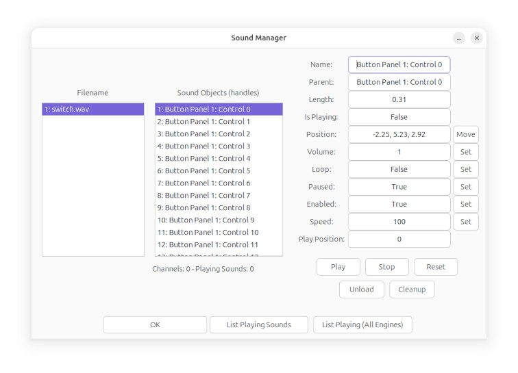

Sound Manager
The Sound Manager gives you full control over the sound in the
simulator.

On the left, the filenames of each loaded sound are shown.
When you click on a filename,
the sound handles associated with that filename are shown in the
center.
Length is the length in seconds of the sound file.
The Position box displays the sound's position in 3D
space, and can be moved by clicking the Move button
Valid volume values are from 0 to 1, so 0.5 would be 50%.
The Enabled option allows for disabling of sounds in
situations where they won't turn off, such as elevator motors.
The Cleanup button deletes any handles or sound files that
are unused, to free up memory and resources.
List Playing Sounds lists on the console all of the playing
sounds in this simulator instance,
and next to it is a button that lists all playing sounds in all
simulator instances.